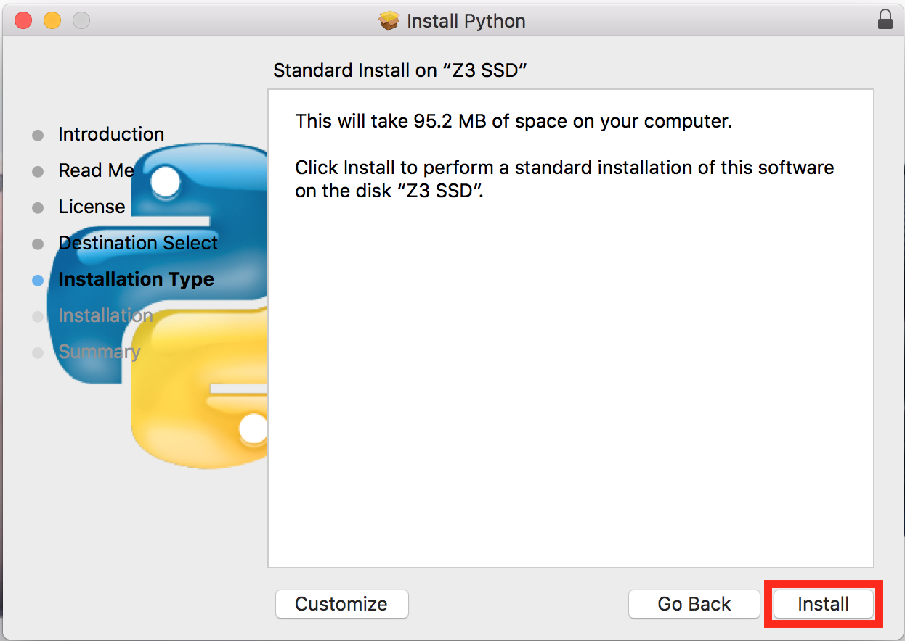

Introduction - Programming with Python
The Python programming language is gaining popularity as a fundamental tool for scientific computing. Python cuts out some unnecessary syntax that other languages require, which lends to its relative simplicity. Not only is it simple to write, it is easy to learn.
Python’s popularity means there is a rich pool of learning resources and Q&A databases from which you can draw. These resources are especially useful after you download, install, and feel comfortable using, the Python programming environment.
This guide will get you there by walking you through the steps to install and setup Python. As well, you will learn basic Python programming to get you on your way.
Needed Materials
- macOS or Mac OS X
- 15-20 minutes to complete the guide
- Active internet connection
Installing Python and IDLE
- Goto http://www.python.org/downloads.
-
Click the yellow button that says 'Download Python 3.5.2.'

- Run the downloaded file once downloaded.
-
Click 'Continue' on bottom right of installation window.

- Continue clicking 'Continue' on bottom right until it says 'Agree.'
- Click 'Agree' to continue the installation.
- Click 'Install' on bottom right of installation window. 
-
Enter password if prompted.
The installation will begin and make take a few minutes. Once finished, you will see:
If you see this, the installation was successful and you can continue. If you see something else, try going back to Step 3 and reinstalling Python.
-
Start Python and IDLE by pressing Command + Spacebar, then type 'idle', and then press Enter